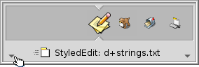

The Twitcher is a task switcher to jump between running applications and their windows.
Just tap CTRL+TAB quickly to switch between the current and the last application/window. Or press CTRL+TAB and hold the CTRL key to go through all running applications by repeatedly hitting TAB or CURSOR LEFT/RIGHT. If you need to get to a specific window of a program, move to its icon as described and then go through its open windows with the CURSOR UP/DOWN keys.
It's also possible to invoke the Twitcher with CTRL+TAB and then use the mouse to choose the application/window you'll jump to when releasing the CTRL key.